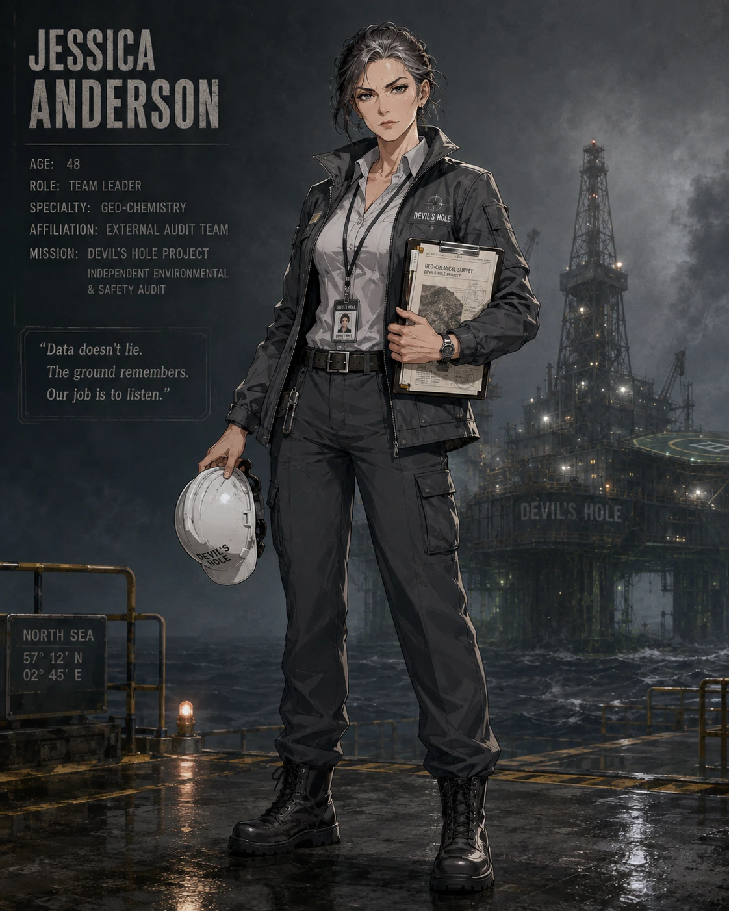
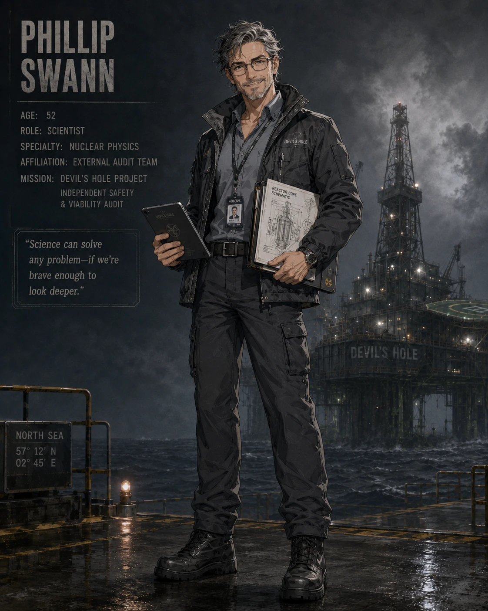
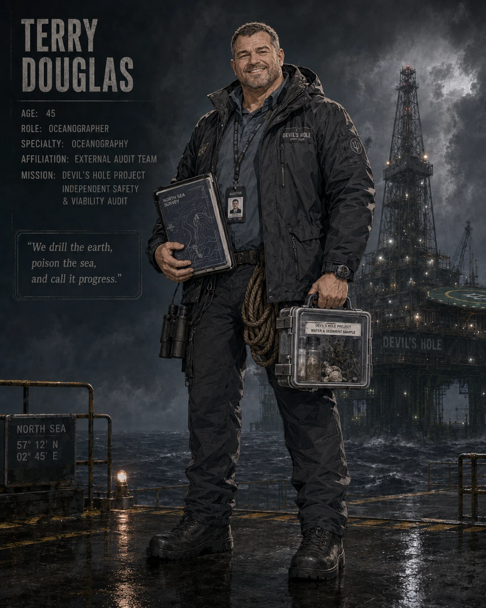
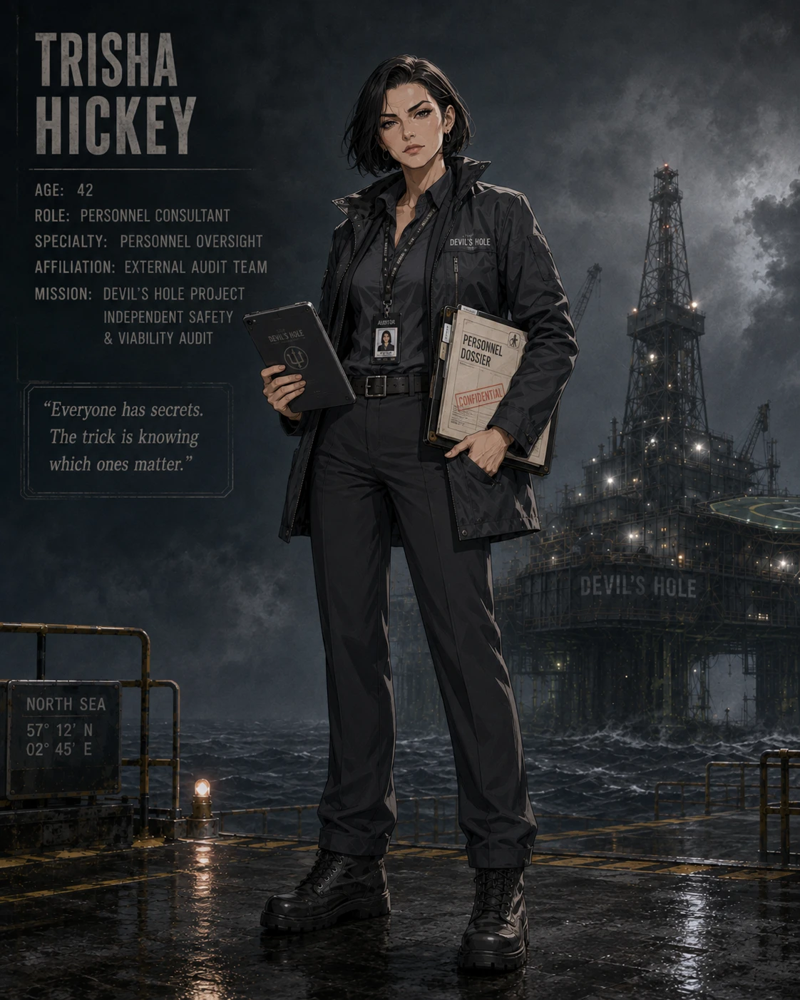
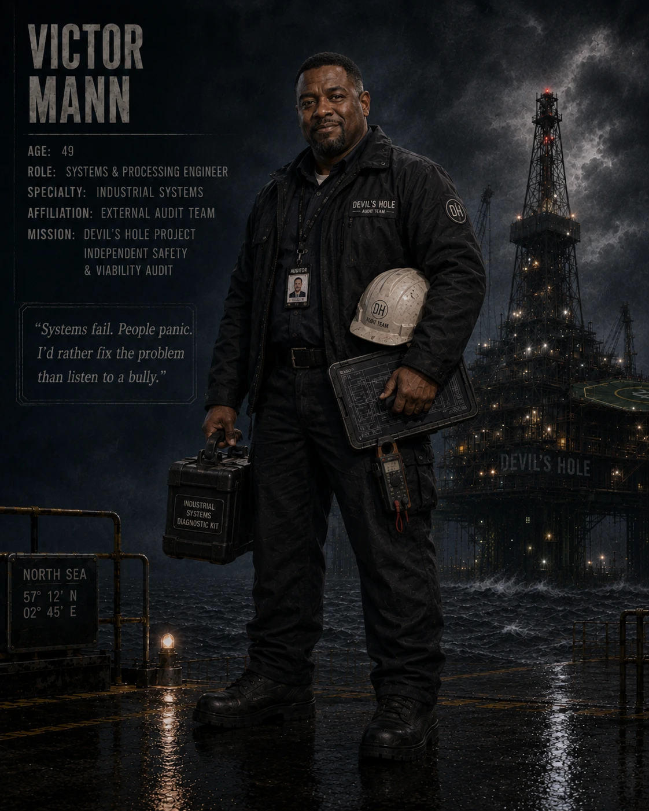
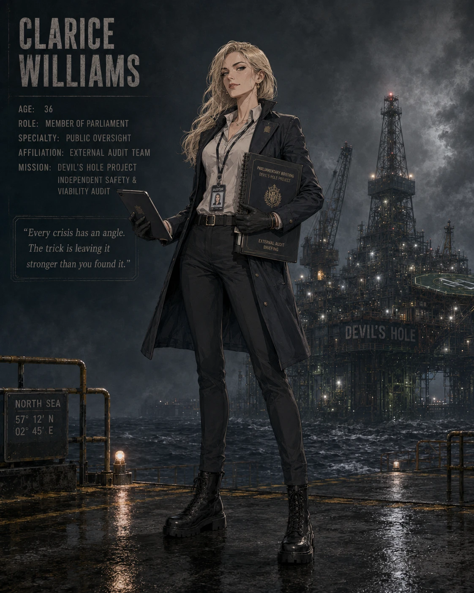

제시카 앤더슨
48세 / 지구화학자 & 팀 리더지구화학자이자 이번 외부 감사팀의 총괄 리더. 북해 데빌스 홀 플랫폼에 구축된 실험적 지각 시추 프로젝트 '너갈(Nergal)'의 예산, 안전성, 성공 가능성을 감사하러 파견되었습니다. 과학은 무한한 미래를 열어주지만 정치적 간섭으로부터 철저히 독립되어야 한다고 믿습니다.

필립 스완
52세 / 핵물리학자핵물리학자. 시추 드릴을 미지의 심도까지 작동시키기 위해 로일럿 박사가 플랫폼에 설치한 원자로 설비의 안전과 기술적 타당성을 검증하는 임무를 맡았습니다. 모험심이 강하고 사교적이며, 인류의 모든 문제에 대한 궁극적인 해답은 과학에 있다고 굳게 믿고 있습니다.

테리 더글러스
45세 / 해양학자해양학자. 해양 환경 조사 및 잠수 전문 지식을 보유한 현장형 전문가입니다. 쾌활하고 과감하게 위험을 감수하는 성향이지만, 마음 깊은 곳에서는 무분별한 개발을 일삼는 인류가 지구 환경에 재앙과도 같은 존재라고 생각합니다.

트리샤 히키
42세 / 인사 컨설턴트인사 관리 및 조직 진단 컨설턴트. 고립된 해상 플랫폼 내 연구 인력들의 근무 환경과 지휘 체계의 적절성을 감사하는 역할을 맡았습니다. 지배적이고 집요한 성격이며, 모든 인간은 원하는 바를 얻기 위해 활용할 수 있는 비밀을 품고 있다고 생각합니다.

빅터 만
49세 / 시스템 & 공정 엔지니어시스템 및 가공 공정 엔지니어. 중장비와 기계, 가스 정제 플랜트 설비 운용의 기술적 결함을 점검합니다. 겉보기에는 느긋하고 농담을 던지는 익살꾼이지만, 불의와 약자를 괴롭히는 행위를 극도로 혐오하는 확고한 정의관을 지니고 있습니다.

클라리스 윌리엄스
36세 / 영국 하원의원영국 하원의원(MP). 천문학적인 정부 재정이 투입된 너갈 프로젝트의 정치적·재정적 정당성을 감사하기 위해 감사팀에 합류했습니다. 민첩하고 교활하며, 상황을 완벽히 이해하지 못해도 아는 척 넘기면서 자신의 정치적 입지를 확장할 기회를 항상 노립니다.